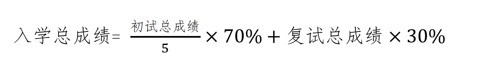

学院通知 · 考试安排
四川大学电气工程学院2022年硕士研究生招生复试通知
发布时间：2022-03-18
根据《四川大学 2022 年硕士研究生复试录取工作实施办法》有关规定， 经学院研究生招生工作领导小组研究， 2022 年我院硕士研究生招生复试安排如下： 一、复试形式及时间 1. 复试形式为线上远程网络复试。 2. 复试时间为 3 月 27 日。 二、远程网络准备 网络视频准备，具体要求详见学院《 2022 硕士线上复试考生指南》（《指南》 QQ 群内发布）。 1. 学院定于 3 月 22 日 14 点召开复试流程线上说明会 , 要求所有考生必须参加，缺席后果自负。详细会议信息群内发布。 2. 复试前学院将进行视频演练测试，请考生按《指南》要求提前完成必要的软硬件环境及网络保障，准时按要求进行测试。 3. 考生应注意着装，应保持发型整洁，素颜、露耳且不可佩戴首饰。复试场所不得有其他人员，复试过程中不得使用计算机、手机、参考书目或其他作弊器材，双手及主要部位应在视频范围之内。 三、考生确认个人联系信息并提交复试预审电子材料 1. 请考生在 3 月 19 日 14 点前点击： https://docs.qq.com/form/page/DZXVLZVVnSkFESkJX?_w_tencentdocx_form=1 ，填写个人联系信息。 2 ．请考生按如下要求准备复试预审电子材料： 资格审查材料 1) 有效第二代居民身份证； 2) 初试准考证（如丢失请登录中国研招网系统打印）； 3) 毕业证（应届生需提供完整注册的学生证）、学位证书； 4) 手写签名的《四川大学 2022 年硕士研究生诚信复试承诺书》（附件 1 ）； 其它材料（按需提交） ⑴ 网上确认时学历、学籍未通过教育部审核的，需提供学籍、学历认证报告：应届毕业生提供《教育部学籍在线验证报告》；往届毕业生提供《教育部学历证书电子注册备案表》；不能在线验证的提供教育部《中国高等教育学历认证报告》；持境外学历的提供教育部留学服务中心《国外学历学位认证书》； ⑵ 网上确认时未取得本科毕业证书的自考和网络教育考生，如此时已经取得本科毕业证书，需交验本科毕业证书原件并提交《教育部学历证书电子注册备案表》； ⑶ 士兵退役计划考生，应提供本人《入伍批准书》和《退出现役证》； 专业素养材料 1) 个人综述（不少于 1000 字），包括个人简历（含毕业论文题目）、自我评价、专业志趣、专业学习规划与设想、职业规划等 ; 2) 本科学习成绩单（应届生由所在学校教务部门加盖公章，非应届生由考生档案所在单位提供并加盖公章）； 3) 外语水平证明、发表论文、各项获奖材料证书等； 3 ．材料提交方式 所有资格审查材料必须合并为一个 PDF 文档，以“面试分组 - 姓名 - 资格审查材料”命名 ; 所有专业素养材料必须合并为一个 PDF 文档，以“面试分组 - 姓名 - 专业素养材料”命名（如 : 电气 1 组 -XXX- 资格审查材料；电气 1 组 -XXX- 专业素养材料）；资格审查材料须在 3 月 21 日前发送给面试群内秘书老师，专业素养材料须在 3 月 23 日前发送给面试群内秘书老师。 注：所有提交材料将于考生录取到校后审核原件。 四、复试内容 考核内容：个人陈述（ 3-5 分钟，准备 PPT ，介绍个人基本情况、研究志趣等），英语测试与专业综合面试（含专业知识问答（随机抽题），综合面试）。 五、成绩计算方法 复试为差额复试。复试成绩总分为 100 分，复试成绩应不低于 60 分，否则视为复试不合格，不予录取。 入学总成绩同分录取说明：依据初试总成绩从高到低依次录取；如初试总成绩相同，依据专业综合面试成绩从高到低依次录取。 六、复试收费标准 根据《四川省发展和改革委员会 四川省财政厅关于规范全省教育系统考试考务行政事业性收费的通知》（川发改价格 〔 2012 〕 641 号）规定：研究生招生复试费：每生 120 元，同等学力报考研究生另收加试科目考试费 80 元。按照学校相关要求，研究生复试费需在网上缴纳。缴费网址： http://sf.scu.edu.cn/payment/ ，用户名为：考生编号，密码为“ SCUDQ2022 ”。 七、体检 拟录取名单公示后，在二级甲等以上医院体检（ 1 寸照片贴体检表）。 体检表报学院截止时间及方式： 拟录取公示后 10 个工作日内。 八、复试分数线及上线名单 学院复试分数线同校线。 上线考生名单及复试分组（含 QQ 群），见附件 2 。 考生需在 3 月 20 日前加入复试小组 QQ 群。 （加群验证信息：考生姓名 + 身份证号后 4 位） 九、咨询联系方式 028-85460836 杨老师 十、举报受理渠道 电话： 028-85405621 张老师 ( 请于工作时间拨打：上午 8:30-12:00 ，下午 2:30-5:30 ） 邮箱： dianqijiwei@scu.edu.cn 注：不能按时加群并参加复试的考生视作自动放弃。 四川大学电气工程学院研究生办公室 2022 年 3 月 17 日
